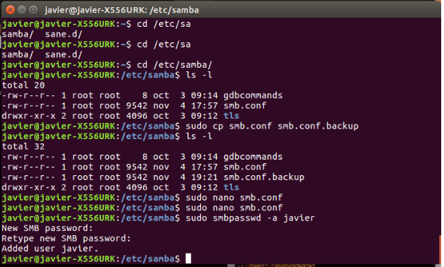

Instalando samba en linux para compartir recursos con windows
Paso 1
Instalamos samba desde la terminal de Ubuntu con el comando:
sudo apt-get install samba-common samba
Paso 2

Ahora nos posicionamos dentro del directorio samba, con el comando:
cd etc/samba/
Despues abrimos para modificar el archivo smb.conf, con el comando:
sudo nano smb.conf
Paso 3
Dentro del archivo a modificar, nos posicionamos en [homes] (es la carpeta del sistema en donde compartiremos
archivos)
descomentamos las tres lineas siguientes y activamos el browseable=yes.
Paso 4
Ahora creamos un usuario para poder acceder a la carpeta compartida, con el comando:
sudo smbpasswd -a javier
Despues de registrar el usuario iniciamos el servidor de samba con el comando:
sudo service smb restart
Paso 5

Ahora desde nuestra pc con Windows entramos a la siguiente ruta, la cual nos pedira el usuario y contrasena.
\nombre_servidor\usuario_creado
Y nos mostrara la carpeta para compartir archivos.
Paso 6

Ahora desde nuestra pc con Windows entramos la carpeta homes/escritorio y vemos los archivos que tiene Ubuntu en el escritorio.
Paso 7

Ahora desde nuestra pc con Windows tenemos una carpeta llamada samba,intentamos pegarla en el escritorio de Ubuntu, desde la carpeta home, pero nos marca error por que no tenemos los permisos para hacer eso.
Paso 8
Nos vamos de nuevo al archivo smb.conf del paso 2 y debajo de las lines agregamos lo siguiente:
readonly=no
Paso 9

De nuevo intentamos pegar la carpeta de samba desde windows al escritorio de Ubuntu por medio de la carpeta
homes
Y esta vez no hubo problemas para lograrlo